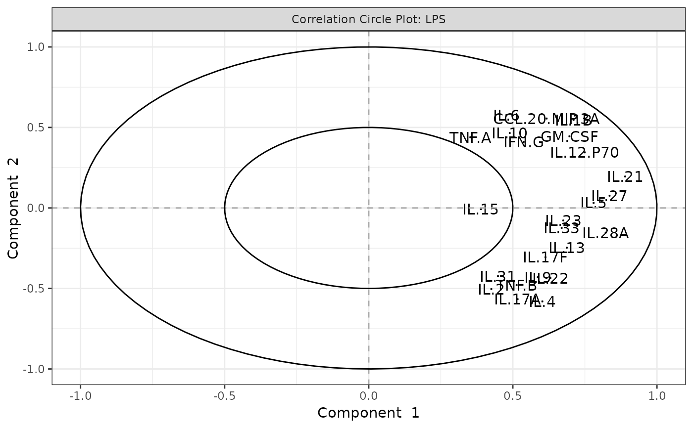

This function performs PCA on cytokine data and generates several types of plots: 2D individuals plot, optionally a 3D scatter plot (if style is "3d" and comp_num is 3), a scree plot, loadings plots for each component, a biplot (using the default stats::biplot), and a correlation circle plot.
Usage
cyt_pca(
data,
group_col = NULL,
group_col2 = NULL,
pca_colors = NULL,
ellipse = FALSE,
comp_num = 2,
scale = NULL,
pch_values = NULL,
style = NULL,
output_file = NULL,
progress = NULL
)Arguments
- data
A data frame containing cytokine data.
- group_col
Character. The name of the column containing the grouping information.
- group_col2
Character. The name of the second column containing the grouping information. If one is missing, the provided column is used for both.
- pca_colors
A vector of pca_colors corresponding to the groups. If NULL, a palette is generated.
- ellipse
Logical. If TRUE, a 95% confidence ellipse is drawn on the individuals plot.
- comp_num
Numeric. Number of principal components to compute and display. Default is 2.
- scale
Character. If "log2", a log2 transformation is applied (excluding factor columns).
- pch_values
A vector of plotting symbols.
- style
Character. If "3d" (case insensitive) and comp_num equals 3, a 3D scatter plot is generated.
- output_file
Optional. A file name for the PDF output. If NULL, interactive mode is assumed.
- progress
Optional. A progress object (e.g., from shiny::Progress) to report progress.
Value
In PDF mode, a PDF is created and the function returns NULL (invisibly). In interactive mode, a (possibly nested) list of recorded plots is returned.
Details
In PDF mode (if output_file or output_file is provided) the plots are printed to a PDF. In interactive mode (if both output_file and output_file are NULL) the plots are captured using recordPlot() and returned as a list for display in Shiny.
Examples
data <- ExampleData1[, -c(3,23)]
data_df <- dplyr::filter(data, Group != "ND" & Treatment != "Unstimulated")
# Run PCA analysis and save plots to a PDF file
cyt_pca(
data = data_df,
output_file = NULL,
pca_colors = c("black", "red2"),
scale = "log2",
comp_num = 3,
pch_values = c(16, 4),
style = "3D",
group_col = "Group",
group_col2 = "Treatment",
ellipse = FALSE
)
#> Results based on log2 transformation.

#> $`CD3/CD28`
#> $`CD3/CD28`$overall_indiv_plot
#>
#> $`CD3/CD28`$overall_3D
#>
#> $`CD3/CD28`$overall_scree_plot
#>
#> $`CD3/CD28`$loadings
#> $`CD3/CD28`$loadings[[1]]
#>
#> $`CD3/CD28`$loadings[[2]]
#>
#> $`CD3/CD28`$loadings[[3]]
#>
#>
#> $`CD3/CD28`$biplot
#>
#> $`CD3/CD28`$correlation_circle
#>
#>
#> $LPS
#> $LPS$overall_indiv_plot
#>
#> $LPS$overall_3D
#>
#> $LPS$overall_scree_plot
#>
#> $LPS$loadings
#> $LPS$loadings[[1]]
#>
#> $LPS$loadings[[2]]
#>
#> $LPS$loadings[[3]]
#>
#>
#> $LPS$biplot
#>
#> $LPS$correlation_circle
#>
#>